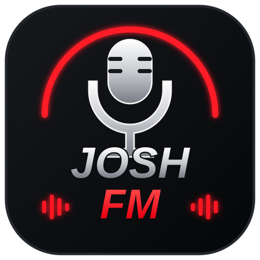

LIVE--:--Normaal
JFM
Klaar om te starten
Koppel Spotify en start je eigen radioshow.
0:000:00

Koppel Spotify en start je eigen radioshow.
Nog niets gezegd.
Nog geen tracks in deze sessie.
Zoek in heel Spotify en zet een track in de wachtrij.
Josh FM mixt standaard je favoriete tracks.
Josh FM gebruikt je smaak als basis en zoekt bij een hoger percentage ook buiten je eigen muziek naar passende nummers.
Josh FM kiest automatisch de beste beschikbare Nederlandse AI-stem.
Josh FM gebruikt Spotify PKCE. Er wordt geen Spotify client secret in je browser opgeslagen.
Voeg deze Redirect URL exact toe aan je Spotify Developer-app.
Josh FM bewaart lokaal welke tracks in je sessies voorbij kwamen en welke je vaak skipt. Dit blijft op je apparaat.